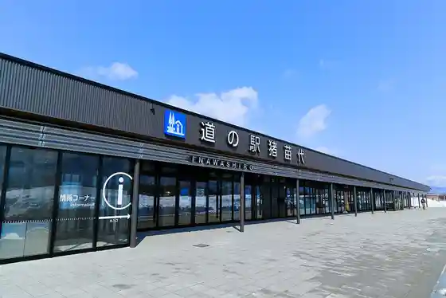
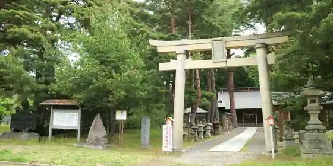
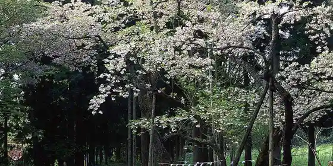
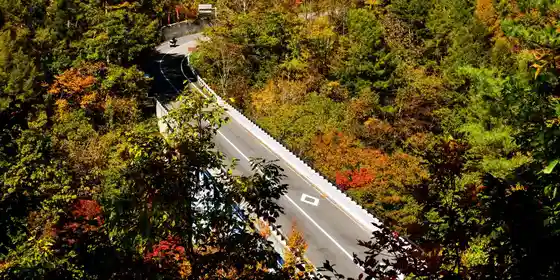

Saisho Tera
Inawashiro, Fukushima · 0242-62-2560 · Official / source link
Roadside Station Inawashiro
Inawashiro, Fukushima · 0242-36-7676 · Official / source link

Kobirakata Tenmangu Shrine
Inawashiro, Fukushima · 0242-62-2048 · Official / source link

Iwa I Shrine
Inawashiro, Fukushima · 0242-62-2048 · Official / source link

Bandai Azuma Reku Line
Inawashiro, Fukushima · 0242-62-3102 · Official / source link

Ten Kagami Kaku
Inawashiro, Fukushima · 0242-65-2811 · Official / source link
Kamegashiro Park
Inawashiro, Fukushima · 0242-62-2048 · Official / source link
Shiroito Falls
Inawashiro, Fukushima · 0242-62-2048 · Official / source link
Tsuchi Tsu Shrine - Kodomoto Shusse no Kami Sama
Inawashiro, Fukushima · 0242-62-2048 · Official / source link
Toru Sawa Fudo Taki
Inawashiro, Fukushima · 0242-62-2048 · Official / source link
Inagawa Shuzo Mise
Inawashiro, Fukushima · 0242-62-2001 · Official / source link
Hajimari no Art Museum
Inawashiro, Fukushima · 0242-62-3454 · Official / source link
Ukawa Buruberii Sono
Inawashiro, Fukushima · 070-4436-1185 · Official / source link
Enmusubi Sakura
Inawashiro, Fukushima · 0242-62-2048 · Official / source link
Famiriisu no Park Bandai ×2
Inawashiro, Fukushima · 0242-93-8530 · Official / source link
Inawashiro Ski Area
Inawashiro, Fukushima · 0242-62-5100 · Official / source link
Kannon Terakawa no Sakura Namiki
Inawashiro, Fukushima · 0242-62-2048 · Official / source link
Shibuki Kori
Inawashiro, Fukushima · 0242-62-2048 · Official / source link
Hakucho Hama
Inawashiro, Fukushima · 0242-62-2048 · Official / source link
Tenjin Hama
Inawashiro, Fukushima · 0242-62-2048 · Official / source link
Nagahama
Inawashiro, Fukushima · 0242-62-2048 · Official / source link
Inawashiro Mizumi
Inawashiro, Fukushima · 0242-62-2048 · Official / source link
Shida Hama
Inawashiro, Fukushima · 0242-62-2048 · Official / source link
Midori no Village
Inawashiro, Fukushima · 0242-65-2841 · Official / source link
Minamigaoka Ranch
Inawashiro, Fukushima · 0242-65-2707 · Official / source link
Ten Kyodai
Inawashiro, Fukushima · 0242-62-2048 · Official / source link
Choei Bandai Yama Ranch
Inawashiro, Fukushima · 0242-62-2048 · Official / source link
Inawashiro Chi Biiru Kan
Inawashiro, Fukushima · 0242-63-2177 · Official / source link
Inawashiro Habu Sono
Inawashiro, Fukushima · 0242-66-2233 · Official / source link
Sekai no Garasu Kan
Inawashiro, Fukushima · 0120-72-7472 · Official / source link
Kyu Yamauchi Ie House
Inawashiro, Fukushima · 0242-62-2021 · Official / source link
Meika Cherry Blossoms
Inawashiro, Fukushima · 0242-62-2048 · Official / source link
Oshika Sakura
Inawashiro, Fukushima · 0242-62-2048 · Official / source link
Bandai Inawashiro Hayama Onsen
Inawashiro, Fukushima · 0242-62-2048 · Official / source link
Ten Kyodai Onsen
Inawashiro, Fukushima · 0242-62-2048 · Official / source link
Inawashiro Onsen
Inawashiro, Fukushima · 0242-66-2233 · Official / source link
Naka no Sawa Onsen
Inawashiro, Fukushima · 0242-62-2048 · Official / source link
Kawakami Onsen
Inawashiro, Fukushima · 0241-32-2130 · Official / source link
Numajiri Onsen
Inawashiro, Fukushima · 0242-64-3422 · Official / source link
Okina Shima Onsen
Inawashiro, Fukushima · 0242-65-2611 · Official / source link
Yokomuki Onsen
Inawashiro, Fukushima · 0242-62-2048 · Official / source link
Oshitate Onsen
Inawashiro, Fukushima · 0242-65-2515 · Official / source link
Numajiri Ski Area
Inawashiro, Fukushima · 0242-67-1250 · Official / source link
Risuterusukiifantajia
Inawashiro, Fukushima · 0242-66-4111 · Official / source link
Jogo Hama
Inawashiro, Fukushima · 0242-93-9290 · Official / source link
Yachi Taira
Inawashiro, Fukushima · 0242-62-2048 · Official / source link
Kawageta Yama
Inawashiro, Fukushima · 0242-62-2048 · Official / source link
Noguchi Hideyo Memorial Museum
Inawashiro, Fukushima · 0242-85-7867 · Official / source link
Bonari Toge
Inawashiro, Fukushima · 0242-62-2048 · Official / source link
Hyaku Menuki no Icho
Inawashiro, Fukushima · 0242-62-2048 · Official / source link
Bandai Yama
Inawashiro, Fukushima · Official / source link
Shiratsu Karakasa Matsu
Inawashiro, Fukushima · 0242-62-2048 · Official / source link
Kyuko Matsumiya Okina Shima Bettei (Geihinkan)
Inawashiro, Fukushima · 0242-65-2811 · Official / source link
Kannon Tera
Inawashiro, Fukushima · 0242-66-2332 · Official / source link
Adatara Yama Yaehakusanshakunage Jisei Chi
Inawashiro, Fukushima · 0242-62-2048 · Official / source link
Annon Tera
Inawashiro, Fukushima · 0242-62-2048 · Official / source link